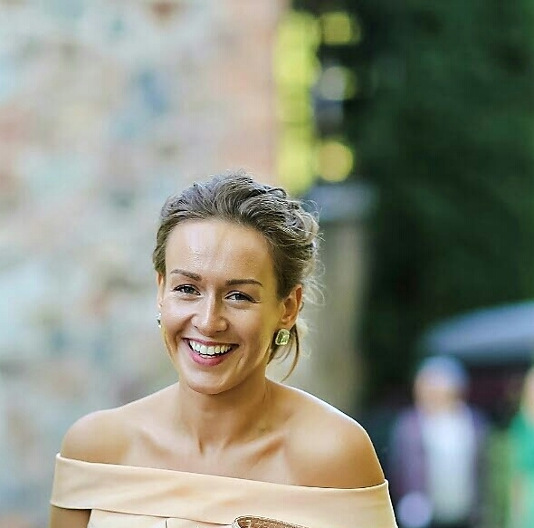

Līva Voroņina b. 1990
Peter's third cousin.
Living. As for every living relative on this site, the birth date is given by year only, and no current address is shown.
Līva Voroņina was born in 1990 in Cēsis, Cēsis district, Vidzeme, Latvia2,3, the daughter of Pēteris Voroņins and Velta Stangaine6,7.
Family
- Parents
- Pēteris Voroņins b. 1953 and Velta Stangaine b. 1955 documented
Life events
| Event | Date | Place and details |
|---|---|---|
| Born | 1990 | Cēsis, Cēsis district, Vidzeme, Latvia2,3 |
| Lived | bet 1990 and 2008 | Rauna, Cēsis district, Vidzeme, Latvia4 |
| Note | According to an online family tree5 |
Photographs

Sources
- MyHeritage family tree 'Dzimta' of Peter's third cousin (his family site), member GEDCOM export of 26 Oct 2026, I5 (person-6000005), GEDCOM lines 177–206.
NAME Līva /Voroņina/
- Ainas Sirlakas atmiņas ("Vīstuči"), Aina Jurciņa née Sirlaka, Priekuļi, 1998, pp. 35, 45, section "DĀVJA UN ALMAS OZOLA PAZARĪTES".
Līva, dz, 1990 … [day omitted] mazā Līva Voroņina svinēja trīs gadiņus, jo piedzimusi tieši šajā dienā.
Translation: Līva, b. 1990 … On [day omitted] little Līva Voroņina celebrated her third birthday, being born on exactly that day.
LIVING. Daughter of Pēteris Voroņins and Velta; "great-granddaughter of Alma" (p. 45: "Līvas vecvecmāmiņas Almas pūra mantām").
- MyHeritage family tree 'Dzimta' of Peter's third cousin (his family site), member GEDCOM export of 26 Oct 2026, I5 (person-6000005), GEDCOM lines 177–206.
BIRT · 1990 · Cēsis, Latvija
- Aina Jurciņa's walk to Rauna for Līva Voroņina's second birthday (1992).
Es parādīju godu [day omitted] dzimušajai Voroņinu Līvai, aiziedama kājām no Priekuļiem uz Raunu un atpakaļ viņas divu gadu dzimšanas dienā.
Grew up with her parents Pēteris Voroņins and Velta Stangaine in Rauna (where her great-aunt Aina Jurciņa walked on foot from Priekuļi to Rauna and back to visit her on her second birthday in 1992, memoir p. 54).
- MyHeritage family tree 'Dzimta' of Peter's third cousin (his family site), member GEDCOM export of 26 Oct 2026, I5 (person-6000005), GEDCOM lines 177–206.
RESI
- MyHeritage family tree 'Dzimta' of Peter's third cousin (his family site), member GEDCOM export of 26 Oct 2026, family F1: I5 Līva Voroņina, child of I1 Pēteris Voroņins × I2 Velta Stangaine.
- Ainas Sirlakas atmiņas ("Vīstuči"), Aina Jurciņa née Sirlaka, Priekuļi, 1998, pp. 35, 45, section "DĀVJA UN ALMAS OZOLA PAZARĪTES".
Velta Ilgas meita Stangaine … Pēteris Voroņins … Bērni: Raimonds … Inga … Līva
Translation: Velta, Ilga's daughter, Stangaine … Pēteris Voroņins … Children: Raimonds … Inga … Līva
parents: Velta Stangaine (Ilga's daughter) and Pēteris Voroņins; p. 45 calls her "little Līva Voroņina" and Alma her great-grandmother. LIVING.